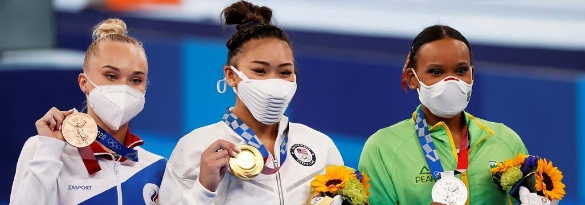

Susto en el Mundial de natación: rescatan a la nadadora estadounidense tras desmayarse en el agua ¿Por qué no se emitieron los dos primeros partidos de la Copa AUF Uruguay? NBA: Stephen Curry fue elegido como MVP de las Finales por primera vez en su carrera Los eSports marcan el futuro en los eventos y la publicidad tradicional Draft NBA 2022: cuándo es la selección de jugadores y dónde verla El sexo fuera del matrimonio, factor de riesgo en el Mundial de Catar 2022  Más allá de la competición: la amistad entre medallas olímpicas